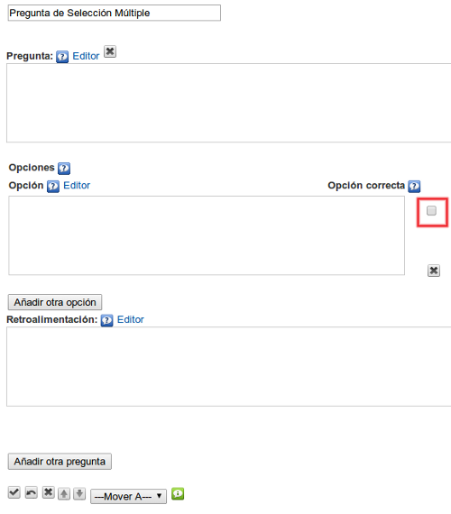

Pregunta de selección múltiple
Utilizaremos este iDevice para proponer una (o varias) preguntas tipo test al alumno. Cada una de las preguntas podrá tener más de una respuesta correcta. Nos permite introducir una retroalimentación que será visualizada por el alumno una vez completada la actividad. Este tipo de actividad facilitará que el alumno pueda comprobar por sí mismo la asimilación de los contenidos trabajados.
Al seleccionar el iDevice "Pregunta de selección múltiple" del listado de iDevices se nos mostrará lo siguiente en nuestro eXeLearning:

En la parte superior, tendremos la posibilidad de modificar el título del iDevice.
En el campo "Pregunta" escribiremos el texto de la pregunta. El enunciado deberá ser claro. Evitaremos premisas negativas ya que tienden a ser ambiguas.
En el campo "Opción" escribiremos el texto con las opciones de respuesta disponibles. Marcaremos en la casilla que se encuentra a la derecha del campo tantas opciones de respuestas correctas como sean necesarias. Podremos añadir nuevas opciones pulsando el botón "Añadir otra opción". Siempre será recomendable añadir un rango de entre tres y cuatro opciones de respuesta.
En el campo "Retroalimentación" escribiremos la retroalimentación que queremos que vean los lectores después de haber realizado la actividad. Si dejamos el campo vacío se ofrecerá la retroalimentación por defecto.
Podremos añadir nuevas preguntas en el iDevice pulsando el botón "Añadir otra pregunta".
Ejemplo de pregunta de selección múltiple: Lorca
Solución
Practica eXe: crear una pregunta de selección múltiple
Realiza los siguientes procedimientos:
- Abre el archivo miarchivo.elp que has creado en la actividad anterior (puedes hacer doble clic sobre él)
- Crea un iDevice "Pregunta selección múltiple" en el nodo "Preguntas". Modifica el título
- Crea en el mismo iDevice tres preguntas, cada una de ellas con tres opciones de respuesta posibles. Selecciona más de una opción como correcta en alguna de las preguntas
- Una vez terminado haz clic en el botón
 para ver el resultado
para ver el resultado - Guarda los cambios. (Archivo > Guardar)
Si tienes alguna duda puedes consultar el siguiente vídeo:
Obra publicada con Licencia Creative Commons Reconocimiento Compartir igual 4.0